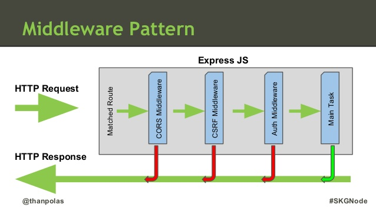

Express.js
Node.js superstar
Contents
- asdf
What's it
Extra popular framework for creating web apps (APIs, Websites) really easy.
It brings
- MVC, rendering HTML
- Routing + verbs: GET, POST etc
- Sessions/Cookies
- Url & Body params
- Static server from the box
- Authentication and much else

18227 stars at gitHub
Install it
npm install express --save
Hello world
var express = require('express');
var app = express(); //similar to http.createServer
//Routes. Our logic.
app.get('/', function (req, res) {
res.send('Hello World!');
});
app.listen(3000, function () {
console.log('Example app listening at localhost:3000');
});
The simplest web app (API or whatever).
Creating HTTP Endpoint

- Http Method
- Route (url)
- Handler (what to do)
HTTP Method === app.method
app.get('/', function (req, res) {
res.send('Hello World!');
});
app.post('/', function (req, res) {
res.send('POST request to the homepage');
});
Methods: get, post, put, head, delete, options, trace, copy, lock, mkcol, move, purge, propfind, proppatch, unlock, report, mkactivity, checkout, merge, m-search, notify, subscribe, unsubscribe, patch, search, and connect.
Handle all methods
app.all('/secret', function (req, res, next) {
console.log('Accessing the secret section ...');
next(); // pass control to the next handler
});
Routing
Ways to define url for the endpoint.
+ Express supports route parameters.
Direct match
// Matches /about
app.get('/about', function (req, res) {
res.send('about');
});
// Matches /string.here
app.get('/string.here', function (req, res) {
res.send('random.text');
});
Simplified regex
// Matches /simpleString and /notSimpleString
app.get('/(not)?simpleString', function (req, res) {
});
You can use ?, +, *, and ().
Minus (-) and the dot (.) are interpreted literally.
Hardcore Regex
// will match butterfly, dragonfly; but not butterflyman, dragonfly man
app.get(/.*fly$/, function(req, res) {
res.send('/.*fly$/');
});
Parameters
app.put('/:paramA/:paramB', function (req, res) {
console.log(req.params.paramA);
console.log(req.params.paramB);
});
Handler
What to do with request. What to respond.
app.get('/', function (req, res, next) {
res.send('Hello World!');
});
Takes 3 arguments.
Request Object
- req.params - route params (:username)
- req.query - /index?param=3
- req.body - POST request body
- req.cookies
- req.get('Authorization')- HTTP Headers
Response
- res.status(200) - Sets Status-code
- res.send("") - Send a response of various types.
- res.json({}) - Send a JSON response.
- res.end() - End the response process.
- res.redirect("/home")
- res.render("view") - Render a view template.
Let us use it all
Some code here.
next()
Middleware pattern
Pipeline of functions.
That try to process request and modify req and res.
If the function completes request, processing stops.
next() is called - req and res go to the next middleware.
Multy-handlers
app.get('/example/b', function (req, res, next) {
console.log('req and res will be sent by the next function');
next();
}, function (req, res, next) {
console.log('We can chain any number of handlers');
next();
}, function (req, res) {
res.send('Hello from B!');
});
Note: changes to req, res are saved.
Express 4 sugar
app.route('/book')
.get(function(req, res) {
res.send('Get a random book');
})
.post(function(req, res) {
res.send('Add a book');
})
.put(function(req, res) {
res.send('Update the book');
});
Super approach
var express = require('express');
var router = express.Router();
// define the home page route
router.get('/', function(req, res) {
res.send('Birds home page');
});
// define the about route
router.get('/about', function(req, res) {
res.send('About birds');
});
module.exports = router;
var birds = require('./birds');
app.use('/birds', birds);
View Engines and .render
The way to render HTML in Express.js
Model + View => HTML
Most of engines have
- If conditions - {{if auth}}Hi!{{endif}}
- Foreach loops - {{foreach p in persons}}
- Data binding - <span>{{name}}</span>
- Master pages (layouts)
- etc
There are +9000 engines
- JADE
- Swig
- Handlebars
- Razor
Setting up
View directory
app.set('views', './views')
View engine
app.set('view engine', 'jade')
Rendering
app.get('/home', function () {
var model = {
name: vasia
};
// passing data to a view (say from db)
res.render('home', model);
});
JADE
Gist
- No closing tags
- Tabs === composition
+
- The most popular (Stack is really overflowed)
- Full feature set
- Familiar for ruby developers
-
- Weird syntax (IMHO unhandy)
- Difficult to learn
True view engine is ...
Express Generator
npm install express-generator -g

Middleware
We definitely need more tools
Understanding
Express app is a queue of middlewares.
In fact our routes are middlewares.
So by calling app.use(); app.use(); app.use();
We are collecting middleware into a queue.
Signature
app.use(function(req, res, next) {});
- Middleware takes req, res and tries to process it.
- If it can't it calls next()
- If error happens it calls next(err)
Middleware can:
- Execute any code.
- Make changes to the request and the response objects.
- End response processing.
- Call the next middleware.
Middleware is used for
- Body Parsing
- Signed cookies
- Session support
- Static file serving
- Authentication/Authorization
- Logging
- Debugging
- much-much more else
General picture

Express app is a queue of middlewares.
Body-parser
Parses response body in any encoding (including gzip)
Takes care of JSON, unlencoded etc
var express = require('express')
var bodyParser = require('body-parser')
var app = express()
// parse application/x-www-form-urlencoded
app.use(bodyParser.urlencoded({ extended: false }))
// parse application/json
app.use(bodyParser.json())
Params are gathered in req.body
Cookie Parser
Parse Cookie header and populate req.cookies with an object keyed by the cookie names.
var express = require('express')
var cookieParser = require('cookie-parser')
var app = express()
app.use(cookieParser())
*supports signed cookie
Session
Session id is saved in cookie.
Session data is stored in memory*
var express = require('express')
var bodyParser = require('body-parser')
var app = express()
app.use(session({ secret: 'keyboard cat'}));
So req gets .session property.
Static server
Build-in in Express
app.use(express.static('public'));
Static files from Public are accessible.
Error handling
If middleware takes 4 arguments, it's an error handler.
app.use(function(err, req, res, next) {
console.error(err.stack);
res.status(500).send('Something broke!');
});
Should be defined last.